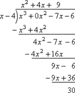
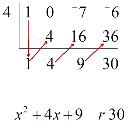
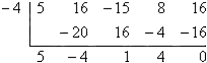
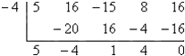

Remainder & Factor Theorems
if $P(x)$ is divided by $(x-r)$, the remainder is P(r)${P(x)}/{(x-r)}=Q(x)+P(r)$
ex) what is the remainder when $x^3-7x-6$ is divided by $x-4$?
$\table P(4)=(4)^3-7(4)-6; =64-28-6; =30$
Check...

Answer: $x^2+4x+9\text" r"30$
A shortcut to long division is Synthetic Division
| Long Division | Synthetic Division |
|---|---|
|  |
ex) Use synthetic division to determine if $x+4$ is a factor of $f(x)=5x^4+16x^3-15x^2=8x+16$

since $P(x)=0$, $x+4$ is a factor of $f(x)=5x^4+16x^3-15x^2+8x+16$

since $P(x)=0$, $x+4$ is a factor of $f(x)=5x^4+16x^3-15x^2+8x+16$
Depressed Polynomial
the quotient after a polynomial has been divided by one of its binomial factors
In the above equation the $x^2+4x+9$ in both the
synthetic and long division are the depressed polynomial
the depressed polynomial has a degree < the original & may also be factorable
the quotient after a polynomial has been divided by one of its binomial factors
In the above equation the $x^2+4x+9$ in both the
synthetic and long division are the depressed polynomial
the depressed polynomial has a degree < the original & may also be factorable
Homework Video